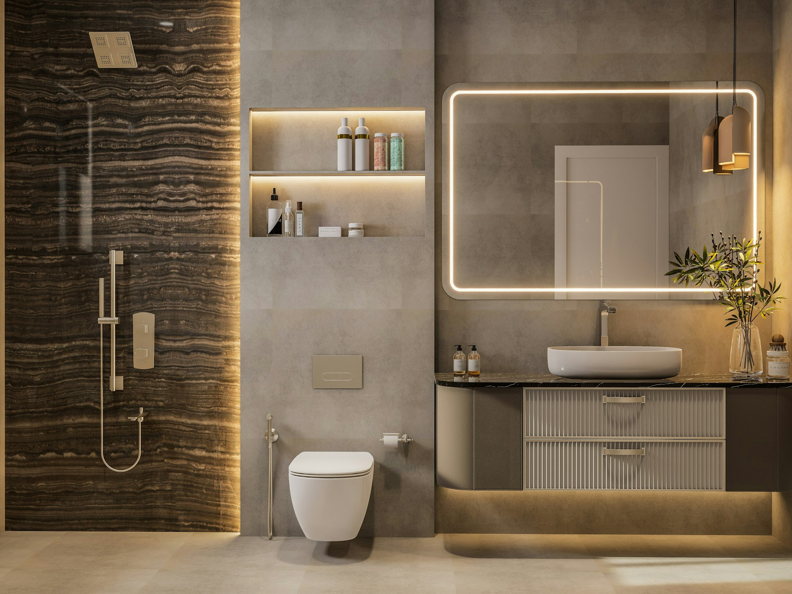
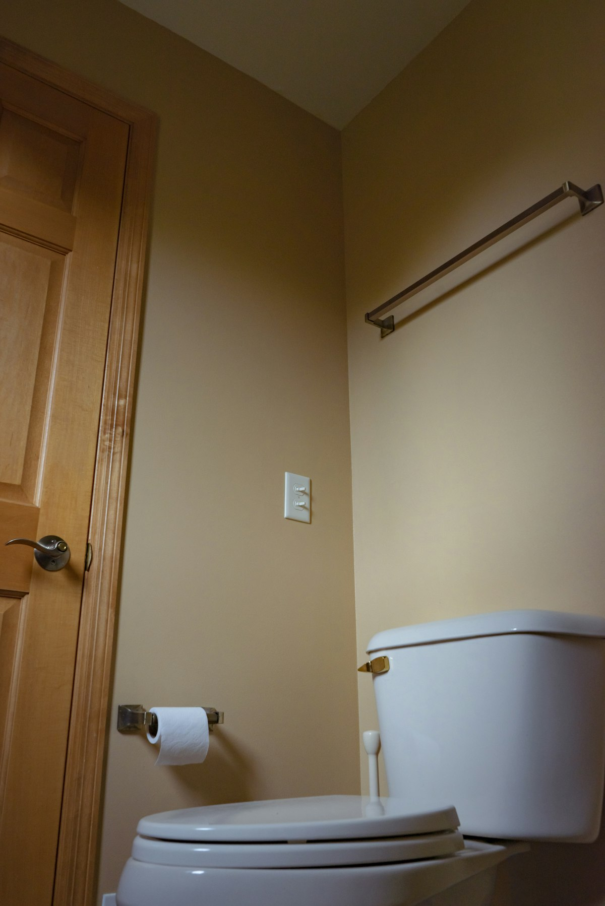
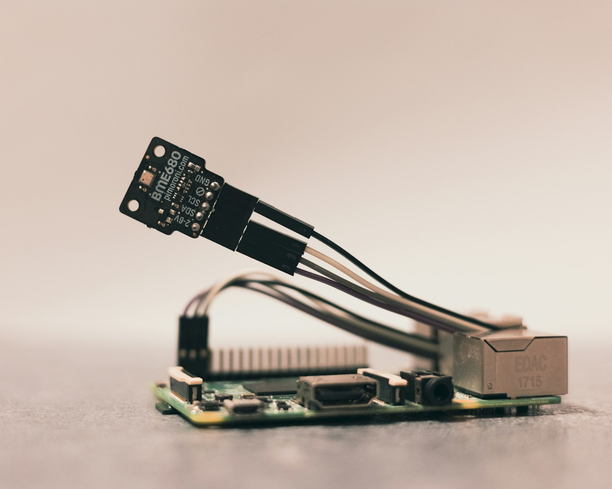
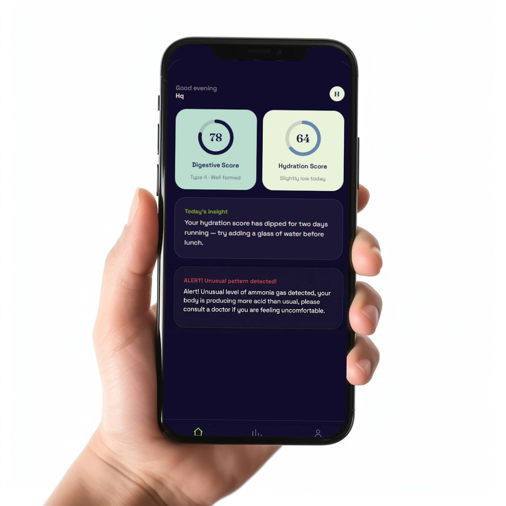
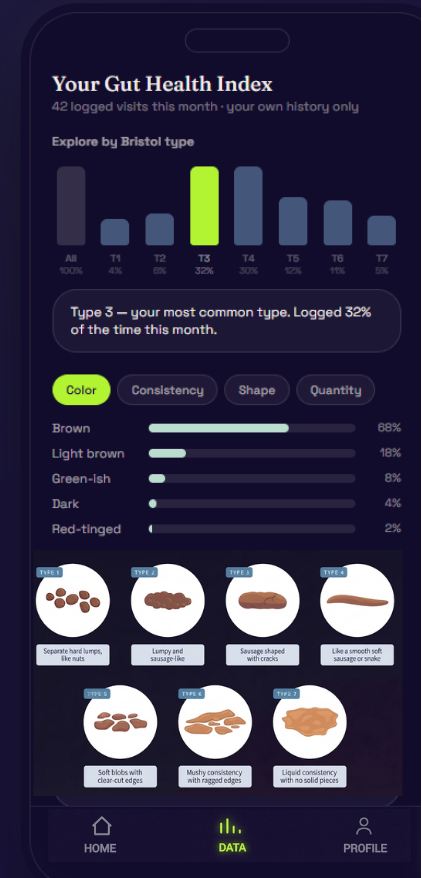
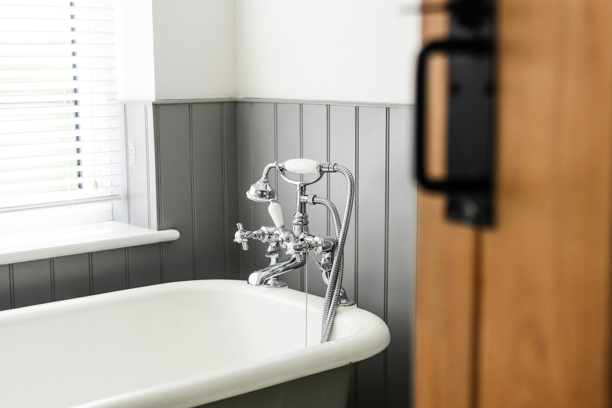

Digestive Score
Passively track how often and when you go, plus the colour, shape and consistency of every stool on the Bristol Stool Form Scale — so you can see your digestive health more clearly.
See it in the app

Mount PeekaPoo behind your toilet. Use the bathroom as usual. See your insights in the PeekaPoo app on HarmonyOS — no buttons, no logging, nothing to wear.
From toilet to phone in four quiet steps. Colour, shape, frequency and smell all tell a story — and only the insight ever leaves your bathroom.


A camera behind the seat, with a colour reference card, captures the colour, shape and consistency of stool and urine. An 8-channel MEMS gas array picks up ammonia and VOC odour signals. Nothing touches you or the sample.
An Atlas 200I DK A2 next to the toilet runs the vision and gas models locally, compares the result with your personal baseline, and makes a rule-based call: normal, watch, or red flag. Raw images are processed on the device and never uploaded.
Only features and scores travel to Huawei Cloud, where your long-term trends are kept and models improve over time on ModelArts. Improvements come back to your device as signed OTA updates.
The HarmonyOS app turns it all into a Digestive Score, a Hydration Score, daily insights and alerts, plus an AI assistant that explains them in plain words. When a red flag is raised, you can share it with a clinician.
PeekaPoo turns what you leave behind into scores and trends that get more personal the longer you use it. After the first few days it learns your baseline, so a change stands out against your normal — not a population average.
Ask the AI assistant what changed, watch how your baseline shifts, and share trend summaries with your care team for better-informed visits.
Passively track how often and when you go, plus the colour, shape and consistency of every stool on the Bristol Stool Form Scale — so you can see your digestive health more clearly.
See it in the app
Urine colour, read against a colour reference card, becomes a daily Hydration Score — with a gentle nudge when it dips two days running.
See it in the appThe gas array watches ammonia and VOC levels. When a pattern breaks from your baseline you get a clear alert, and a red flag can be shared with a clinician.
See it in the app
See your Bristol type chart, colour and consistency patterns, and what every stool type means. Then ask PeekaPoo's assistant — “Is my gut health okay?” — and get an answer grounded in your own week, not generic advice.
The on-device language model only words the answer. Risk levels come from transparent rules.
Your data is personal, and PeekaPoo is built to keep it that way. Images are analysed on the device itself. Raw photos are never uploaded, and the cloud only ever sees scores and trends.
The device lives in a sealed, moisture-resistant enclosure with low-voltage components, so it is safe in your bathroom.
More on safety